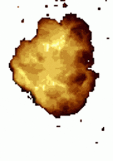
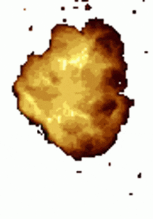

Flash Powder (Aluminum-Based)
1. Maximum Power (Rapid Ignition, Loudest Report)
- Potassium Perchlorate: 70%
- Aluminum Powder (fine mesh): 30%
- Very fast ignition, extremely bright flash, very loud explosion.
2. Longer Burn (Slightly Slower Flash)
- Potassium Nitrate: 55%
- Aluminum Powder: 35%
- Sulfur: 10%
- Bright flash with slightly longer burn, moderate sensitivity.
Highly sensitive and dangerous—handle with extreme caution.
 
